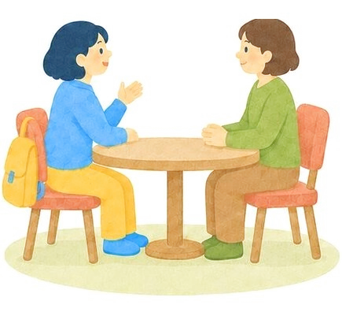
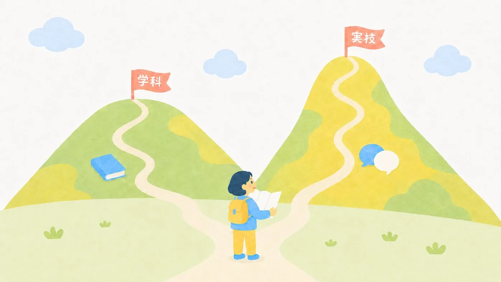

はじめての方へ
キャリアコンサルタント資格 まるわかりガイド
「気になるけど、費用は？ 難しい？ 働きながらでも取れる？」迷っている方が最初に知りたいことを、このページにまとめました。
更新日: 2026年10月15日情報確認日: 2026年7月12日
ANSWER
結論：キャリアコンサルタント資格、取るにはどうする？
多くの養成講習は給付金の対象です。条件を満たせば、最大80%が支給されます。
PRこのページには広告(紹介リンク)がありますくわしく
- 広告・PR
- 右下の「無料説明会を見る」のボタンは、広告(紹介リンク)です。本文には紹介リンクを入れていません
- 紹介報酬
- 右下のボタンから説明会参加・申込みがあった場合、運営者が報酬を受け取ることがあります
- 学校からの無償提供
- 受けていません
- 受講料
- 運営者自身が支払っています
キャリアコンサルタントの資格、気になってるんだけど…ボクにも取れるのかな？
だいじょうぶ、順番に見ていこう。ここを読めば、取るかどうか決めやすくなるよ。
▶︎ その前に:「最悪の国家資格」と言われる3つの理由は、事実かどうか調べました
1. キャリアコンサルタントって、どんな資格？
キャリアコンサルタントは、働く人の仕事選びやキャリアの計画、スキルアップの相談にのる専門家です。2016年にできた国家資格で、職業能力開発促進法にもとづく登録制になっています。資格がない人は「キャリアコンサルタント」と名乗れない名称独占資格で、登録は5年ごとに更新します。
働く場所は、会社の人事や人材育成の部署、ハローワークなどの就労支援機関、大学のキャリアセンター、人材会社などです。「人の話を聴いて、その人らしい選択を支える」ことが仕事の中心になります。


モヤン国家資格ってことは……持っていたら、一生安心？

サニー先生名乗るには登録が必要で、5年ごとに更新もあるんだ。運転免許みたいに、持ちつづけるには、お手入れがいるんだよ。
2. 取得までの道のり
いちばん一般的なルートはこの3ステップです。

- 養成講習を修了する:厚生労働大臣が認定した150時間の講習です。通学・オンライン・自宅学習を組み合わせるのが一般的で、期間は学校によって最短0.5か月〜6か月で、3〜6か月が多いです。
- 国家試験に合格する:学科と実技(論述・面接)があります。試験を行う団体はキャリアコンサルティング協議会とJCDAの2つで、どちらで合格しても同じ国家資格です。
- 登録する:名簿に登録すると、晴れて「キャリアコンサルタント」と名乗れます。
なお、相談の仕事を3年以上している方などは、講習を受けずに受験できる道もあります。

ちゃん体験わたしは養成講習を修了して、いまは2026年11月の試験に向けて勉強しているところです。ちょうど2つめのステップの途中です。
モヤンちゃんも、いま道のりのまんなかにいるんだね。
3. 費用の総額 — 全部でいくら？
講座の料金だけを見ていると、あとから受験料や登録料がかかって驚くことがあります。先に全体の費用を見ておきましょう。
| 項目 | 金額の目安 | メモ |
|---|
| 養成講習 | 約30〜50万円 | 学校により差。多くが給付金の対象 |
| 受験料(学科) | 8,900円 | 両試験団体とも共通 |
| 受験料(実技) | 29,900円 | 論述+面接 |
| 登録(初回) | 17,000円ほど | 登録免許税9,000円+登録手数料8,000円 |
| 更新講習(5年ごと) | 数万円〜 | 知識講習8時間+技能講習30時間以上 |
ざっくり言うと、給付金を使わない場合の初期費用は合計35〜55万円前後です。ここから、次で紹介する給付金で大きく戻ってくることがあります。
▶︎ 給付金を使うと実質いくらになるのか、3段階の条件と手続きまで詳しく
モヤン講座のお金だけじゃなかったんだ……。
サニー先生受験料・登録料・更新まで入れると、全体が見える。先にぜんぶ見ておくと、あとで驚かずにすむよ。
4. 給付金でいくら戻る？(専門実践教育訓練給付)
ここがいちばん大事。対象講座なら、受講料の半分以上が戻ってくることも多いんだよ。
多くの養成講習は、雇用保険の専門実践教育訓練給付の対象です。条件を満たせば、まず受講費用の50%(受講中に支給)。資格を取って就職などにつながると+20%、さらにお給料が上がるなどの条件を満たすと+10%で、最大80%が支給されます(それぞれ年間の上限額があります)。
💰 実質負担額かんたん計算機
| ケース | 戻る額 | 実質負担 |
|---|
| 受講修了(50%) | — | — |
| +資格取得・就職等(70%) | — | — |
| +賃金上昇(最大80%) | — | — |
※年間上限(50%: 40万円 / 70%: 56万円 / 80%: 64万円)を自動で反映した概算です。受給には雇用保険の加入期間などの条件があり、手続きは受講開始前にハローワークで行う必要があります。
▶︎ 297,000円の講座で計算すると実質いくらか・対象になる人・2週間前までの手続き
5. 難易度と勉強時間

合格率は回によって変わりますが、学科・実技ともにおおむね50〜60%台のことが多いです。国家資格の中では、「きちんと準備すれば、初めて学ぶ人でも十分に合格をねらえる」レベルです。最新の合格率は、上の試験団体の公式サイトで毎回公表されています。
勉強時間の目安は、講習の150時間に加えて、自習が100〜200時間ほどです。つまずきやすいのは、専門用語のむずかしさ。このサイトの「ことば図鑑」は、まさにそのために生まれました。
6. 働きながら・子育てしながら取れる？
取れます。むしろ受講生の多くは社会人・子育て中の方です。講習の通学(またはオンラインのライブ授業)は週1日×3〜6か月のコースが主流で、平日夜・土日コース、録画振替のある学校も。生活に合わせた学校選びのコツは、こちらのガイドにまとめてあります。
ちゃん体験わたしは働きながら、土曜日の朝9時から夕方までのクラス(全10回)で受けて、修了しました。授業とは別に課題もあったので、コツコツ進めるのが大事でした。
サニー先生休んだときの振替があるかも、学校を選ぶときの大事なポイントだよ。
7. よくある質問
Q独学だけで受験できますか？
A相談の仕事の経験(3年以上)などがない場合は、養成講習を修了することが受験の条件になります。多くの人がこのルートで受験しています。
Q試験団体が2つあるけど、どちらがいいの？
A合格すれば同じ国家資格です。実技(面接)の評価観点に持ち味の違いがあるので、通う学校がどちらに対応しているかも参考に。くわしくは講習と試験対策の違いガイドへ。
Q資格を取ったら、すぐ食べていけますか？
A正直に言うと、資格だけで自動的に仕事が来るものではありません。企業内での活用、就労支援機関、副業的な活動など生かし方はさまざま。キャリアコンサルタントの仕事に現実的な情報をまとめています。
Q更新にもお金がかかる？
A5年ごとの更新には、講習(知識講習8時間+技能講習30時間以上)を受ける必要があり、費用は数万円からが目安です。資格を取ったあとのお金も含めて考えておくと安心です。
Q勉強時間は、どのくらい必要ですか？
A講習の150時間に加えて、自習が100〜200時間ほどが目安です。つまずきやすいのは、専門用語のむずかしさです。
▶︎ ほかの質問も見る(よくある質問40問。なるには・費用・稼げる？やめとけは本当？)
8. 次のステップ
検討の順番はこれがおすすめ。あわてなくて大丈夫、1つずつね。
- 養成学校の選び方を読む(比べる前に決めること3つ)
- 学校を比較して、2〜3校にしぼる
- 気になる学校の説明会・資料で最終確認(給付金対象かも必ずチェック)
- 迷ったら運営者の受講記録ものぞいてみてね